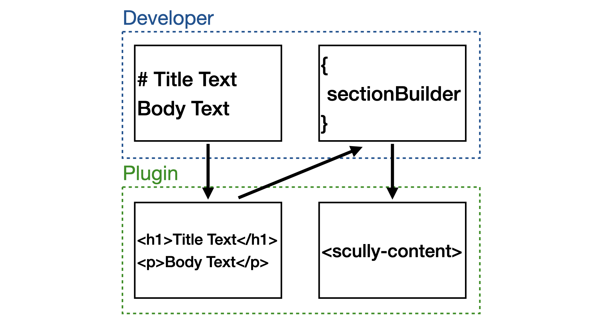

Scully Multi Markdown Page Builder Plugin
A Scully Plugin for creating a static page from multiple markdown files.
This page was created from eight markdown files and some CSS! No HTML. 🙌
Installation
npm install --save-dev scully-multi-markdown-page-builder-pluginimport {
MultiMarkdownPageBuilderPlugin,
MultiMarkdownPageBuilderPluginConfig
} from 'scully-multi-markdown-page-builder-plugin';
const pluginConfig: MultiMarkdownPageBuilderPluginConfig = {
sectionBuilders: [
// add multiple markdown section builders (MarkdownSectionBuilder[])...
],
title: 'Home' // Optional title to be made available through the ScullyRouteService
}
export const config: ScullyConfig = {
// ...
routes: {
'/homepage': {
type: MultiMarkdownPageBuilderPlugin,
...pluginConfig
}
}
};<!-- At route defined in ScullyConfig -->
<scully-content></scully-content>Overview
The plugin works by accepting multiple markdown section builders (MarkdownSectionBuilder[]) and displaying each section in order, stacked on a single page.
A markdown section builder is defined as follows:
interface MarkdownSectionBuilder {
markdownFileSources: string[];
sectionBuilder: (markdownHtmls: string[]) => string;
extras: any;
}Each MarkdownSectionBuilder accepts multiple markdown file paths (markdownFileSources), each of which are compiled into HTML by the plugin, and then passed as an array of HTML strings to the provided sectionBuilder function.
The sectionBuilder function is responsible for combining the HTML strings (markdownHtmls) into a single HTML string, performing any additional post processing on the HTML, then returning it. The returned string is then combined with the results of any other MarkdownSectionBuilder to create the final page. The final page HTML is inserted into the scully-content tag provided by the Scully Library.
The extras property is available for any additional properties that need to be made available to the sectionBuilder function.

Example
Here is an example MarkdownSectionBuilder that highlights the word "hightlight" in a converted markdown file by wrapping the word in a mark tag.
const highlightBuilderExample: MarkdownSectionBuilder = {
sectionBuilder: (markdownHtmls: string[]) => {
const markdownHtml = markdownHtmls[0];
return markdownHtml.replace(/highlight/gi, hightlight => `<mark>${hightlight}</mark>`);
},
markdownFileSources: ['./homepage/highlightExample.md'],
extras: {}
}Here is the result of using the above MarkdownSectionBuilder:
Only highlight certain words.
Creator Functions
The library ships with two creator functions that return common MarkdownSectionBuilder configurations, without having to define your own sectionBuilder. The two creator functions are createSingleMarkdownSection and createMultipleMarkdownSection. The former is for creating a single section of the page using a single markdown file, and the latter is for creating a single section of the page using multiple markdown files. The latter is useful for creating a grid appearance, with content from multiple markdown files side-by-side. Both creator functions accept css property names to enable styling customization.
This page was built almost exclusively with these two creator functions.
See more in the API Documentation.
Usage
The MultiMarkdownPageBuilderPlugin consists of a route plugin and a render plugin.
Route Plugin
The route plugin takes a configuration that conforms to the MultiMarkdownPageBuilderPluginConfig interface. The configuration takes in an array of MarkdownSectionBuilders, with each element responsible for creating a separate portion of the overall page.
const multiMarkdownPageBuilderPluginConfig: MultiMarkdownPageBuilderPluginConfig = {
sectionBuilders: [
createSingleMarkdownSection(
'./homepage/header.md',
{
containerDivId: 'headerContainer',
elementDivId: 'headerItem'
}
),
createMultipleMarkdownSection(
[
'./homepage/markdownFile1.md',
'./homepage/markdownFile2.md',
'./homepage/markdownFile3.md'
],
{
containerDivId: 'gridContainer',
elementsDivClass: 'grid-item'
}
)
]
}
export const config: ScullyConfig = {
// ...
routes: {
'/docs/:slug': {
type: 'contentFolder',
slug: {
folder: "./docs"
},
postRenderers: [DisableAngular]
},
'': {
type: MultiMarkdownPageBuilderPlugin,
multiMarkdownPageBuilderPluginConfig
}
}
};Render Plugin
This plugin takes the section builders from the MultiMarkdownPageBuilderPluginConfig and converts the markdown files provided in each markdownFileSources array to a pre-rendered HTML array. The HTML array is then passed to each section builder's sectionBuilder function, which is responsible for adding any custom HTML.
This plugin finds the <scully-content> tag, and it injects the HTML as its previous sibling(s).